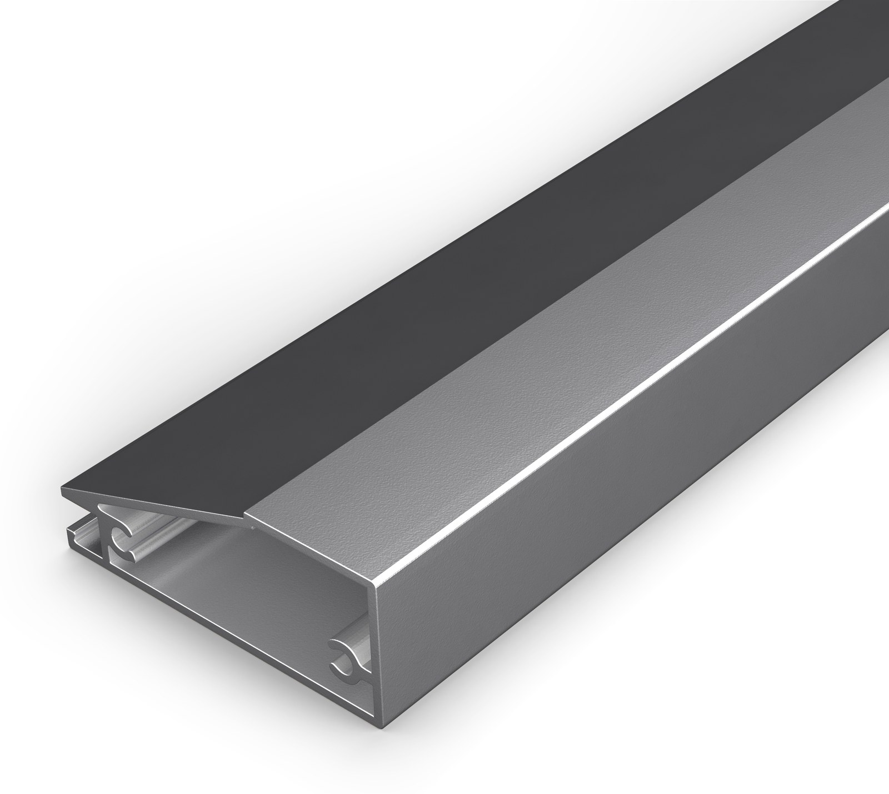

Рамочный профиль для фасадов со стеклом: рамка по всему периметру или в сочетании с узким горизонтальным профилем.
| Классические | чёрный, антрацит |
| Благородные | латунь, медь, никель, розовое золото |
| Дизайнерские | коньяк, тёмно-оливковый |
| Под ключ | фрезеровка, сборка, установка стекла |